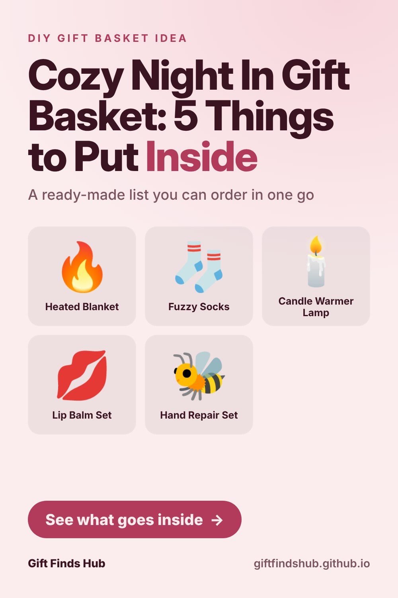

1 🔥
🔥
🔥Bedsure Heated Throw Blanket
Instant warmth for movie nights and cold mornings. The cozy gift she'll curl up with all winter.
- 6 heat levels + preheat
- Timer up to 10 hours, auto shut-off
- Earned the Good Housekeeping Seal (per listing)
Home › Gift guides
🧺 5 items · Updated November 26, 2026
A DIY gift basket for the woman who deserves a night off: something warm, something soft, something that smells good and two small treats.
📌 Save this guide to PinterestHeads up: some links on this page are affiliate links. As an Amazon Associate I earn from qualifying purchases. It costs you nothing extra.
The best gift baskets follow a simple formula: one bigger item that anchors the basket, and three or four small things around it that share a theme. For a cozy night in, the anchor is something warm, and everything else supports the same evening: soft socks, low light, and a little self-care.
Every item below is an Amazon best-seller we already recommend in our gift guides, so you can order all five at once and assemble the basket in ten minutes. You can also scale it down: the socks, lip balm and hand cream on their own make a lovely small gift for a coworker or a teacher.
To finish it, add one thing from the grocery store that she can enjoy the same night: hot chocolate, her favorite tea or a bar of good chocolate.
🔥Instant warmth for movie nights and cold mornings. The cozy gift she'll curl up with all winter.
 🧦
🧦Super-soft, warm socks in a multi-pack — the cutest cheap gift for moms, teens and friends.
 🕯️
🕯️Melts a candle from the top — no flame — with a timer and dimmer. Looks expensive, isn't.
 💋
💋The stocking stuffer everyone loves — a multi-pack you can split between stockings.
 🐝
🐝A 4-piece hand care set for dry winter hands — an easy, always-appreciated thank-you for the host.
One warm anchor item such as a blanket, plus small comforts: fuzzy socks, a candle or candle warmer, lip balm and hand cream. Add tea or hot chocolate to finish it.
We don't list prices because they change all the time on Amazon. Tap any product to see the current price and delivery date.
We only list products with strong ratings and a large number of real customer reviews, and we check each Amazon listing before adding it.

Pin it to your Christmas board so you can come back when you're ready to shop. We update the list as prices and stock change.
📌 Save to Pinterest